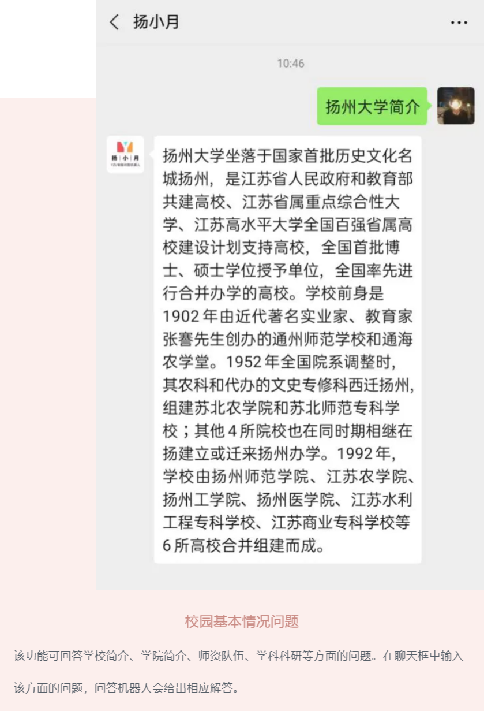
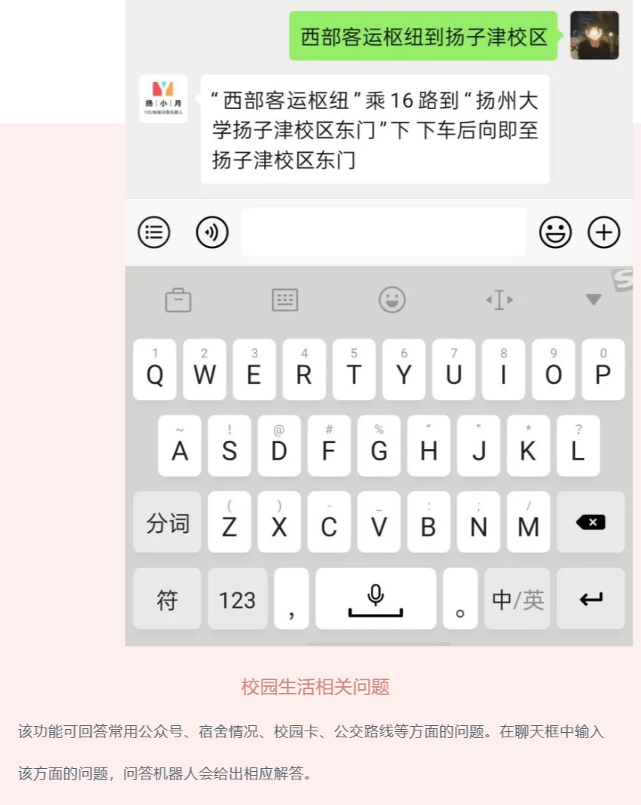
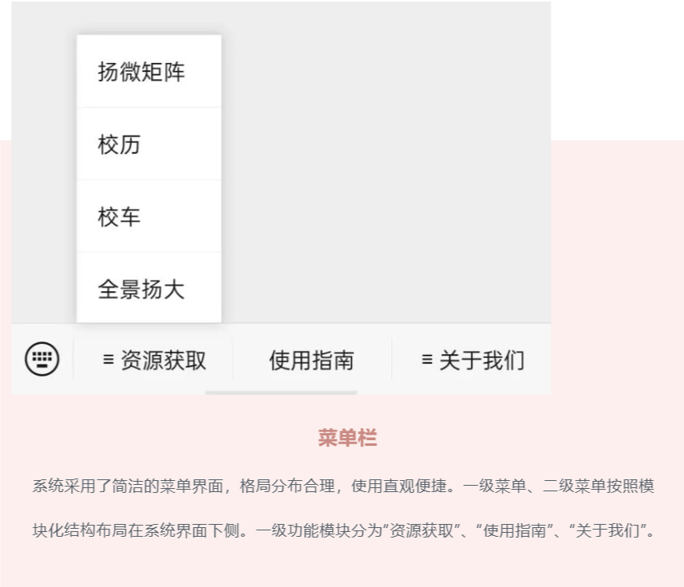

“扬小月”（周绍峰等人）：
该项目是针对扬州大学学生的问答机器人，主要支持自动回答包括学校基本情况、学习、校园生活等方面的问题，亦支持语音输入、闲聊等功能。
用户手册
①用户可关注公众号，通过菜单中的“用户手册”获取。或直接通过链接 https://mp.weixin.qq.com/s/j7OSzD56llzb03cqP4y3Ww 打开用户手册。
②下方提供用户手册“按功能分类图”及“整体长图”。

图 1 分类图1

图 2 分类图2

图 3 分类图3

图 4 分类图4

图 5 分类图5

图 6 长图